Comunicador Audiovisual · Realizador · Actor

Soy un creador audiovisual con enfoque en la narrativa cinematográfica y la estética visual. Con experiencia tanto frente como detrás de cámara, me desempeño en dirección, producción de contenido y actuación — aportando una mirada integral al proceso creativo.